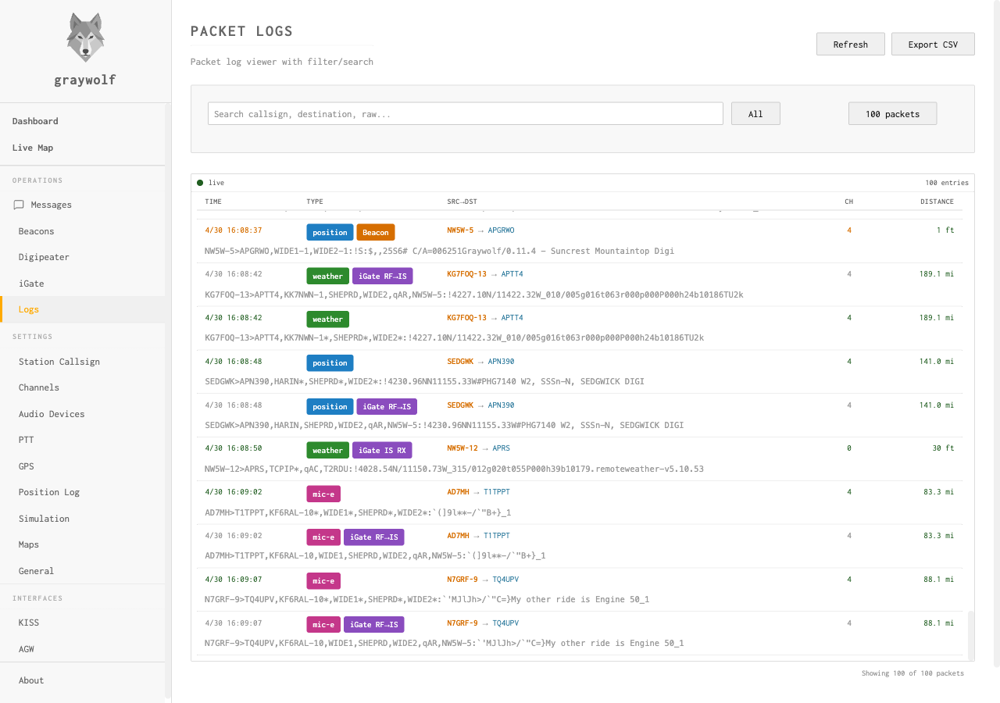

Monitoring
Prometheus metrics, packet logs, and live packet stream
Graywolf provides several monitoring interfaces for observing station activity and diagnosing issues.

Prometheus Metrics
Graywolf exposes a Prometheus-compatible /metrics endpoint
on the HTTP port. Point your Prometheus scrape config at it to collect
station telemetry.
scrape_configs:
- job_name: graywolf
static_configs:
- targets: ['graywolf-host:8080']Available Metrics
| Metric | Type | Description |
|---|---|---|
graywolf_rx_frames_total |
counter | Received packets (label: channel) |
graywolf_tx_frames_total |
counter | Transmitted packets (label: channel) |
graywolf_dcd_active |
gauge | Data carrier detect state (label: channel) |
graywolf_audio_level |
gauge | Peak audio level 0–1 (label: channel) |
graywolf_child_up |
gauge | Rust modem process alive (1) or dead (0) |
graywolf_child_restarts_total |
counter | Modem crash/restart count |
| Metric | Type | Description |
|---|---|---|
graywolf_tx_deduped_total |
counter | Duplicate TX packets suppressed |
graywolf_tx_rate_limited_total |
counter | Packets dropped by rate limiter |
| Metric | Type | Description |
|---|---|---|
graywolf_digipeater_packets_total |
counter | Packets digipeated |
graywolf_beacon_packets_total |
counter | Beacon transmissions (label: type) |
graywolf_igate_rf_to_is_gated_total |
counter | Packets gated from RF to APRS-IS |
graywolf_igate_is_to_rf_gated_total |
counter | Packets gated from APRS-IS to RF |
| Metric | Type | Description |
|---|---|---|
graywolf_kiss_clients_active |
gauge | Connected KISS clients (label: interface) |
graywolf_agw_clients_active |
gauge | Connected AGWPE clients |
graywolf_gps_parse_errors_total |
counter | GPS parse errors (label: source) |
Packet Log API
The packet log maintains a ring buffer of the most recent packets (up to 1000 entries, 30-minute age limit). Query it via the REST API or view it in real time through the web UI.
| Method | Endpoint | Description |
|---|---|---|
| GET | /api/packets |
Query packet history (filterable by time, direction, channel) |
| WebSocket | /ws/packets |
Live packet stream |
Packet Entry Fields
| Field | Description |
|---|---|
timestamp | ISO 8601 timestamp |
channel | Radio channel number |
direction | RX, TX, or IS |
source | Origin: modem, kiss, agw, beacon, digi, igate-tx, igate-is |
display | Human-readable packet string |
type | APRS type: position, message, weather, etc. |
decoded | Parsed APRS data (position, message, telemetry objects) |
raw | Base64-encoded raw AX.25 frame |
Health Check
A lightweight health endpoint is available for load balancers and monitoring systems:
GET /api/health
{
"status": "ok",
"time": "2026-04-11T10:00:00Z",
"started_at": "2026-04-11T08:30:00Z"
}Status Endpoint
The status endpoint returns aggregated dashboard data in a single request — uptime, per-channel stats (RX/TX counts, DCD state, audio peak), and iGate connection status:
GET /api/statuspprof Debug Profiles
Graywolf can expose Go's net/http/pprof endpoints on a
separate listener for diagnosing memory growth, goroutine leaks, and
CPU hotspots. The listener is off by default; enable it
by passing -pprof <addr>.
The pprof listener has no authentication. The
endpoints reveal heap layout, goroutine stacks, and process command
line. Always bind to loopback
(127.0.0.1:6060). A non-loopback bind logs a warning
at startup but is still permitted for trusted-network profiling.
Disable the flag (omit it) when not actively investigating.
graywolf -pprof 127.0.0.1:6060Common captures
# Heap snapshot (live allocation)
curl -o heap.prof http://127.0.0.1:6060/debug/pprof/heap
# Goroutine stack dump (human-readable)
curl http://127.0.0.1:6060/debug/pprof/goroutine?debug=2
# 30 s CPU profile
curl -o cpu.prof http://127.0.0.1:6060/debug/pprof/profile?seconds=30
# 5 s execution trace
curl -o trace.out http://127.0.0.1:6060/debug/pprof/trace?seconds=5
# Interactive web UI for any profile
go tool pprof -http=:8081 heap.profMemory leak workflow
- Capture a baseline heap profile after warmup
(
curl -o base.heap ...). - Wait through a representative workload window (30+ minutes).
- Capture a second profile (
later.heap). - Diff with
go tool pprof -http=:8081 -base base.heap later.heapand look at the inuse_space view. The diff highlights what grew between snapshots, which is what a leak looks like.
Note: the Rust modem child process is a separate PID and is not visible
to Go pprof. Watch its memory through
process_resident_memory_bytes on the Prometheus side or
ps -o rss against the modem PID.
Logging
Graywolf outputs structured logs to stderr. By default, logs are at
INFO level. Enable verbose logging with the
-debug flag.
When running under systemd, logs are captured by the journal and queryable with:
journalctl -u graywolf -fDebug logging includes per-packet decode details, IPC message traces, and CSMA timing decisions. Enable it when troubleshooting decode or transmission issues.